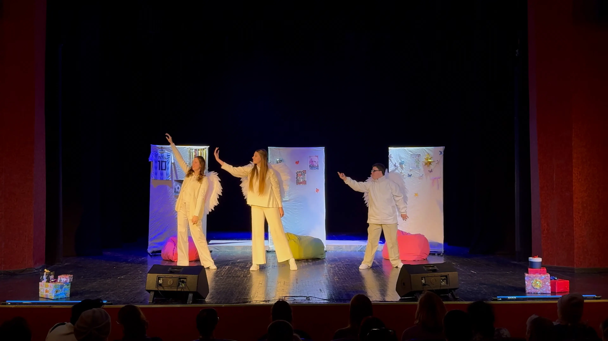
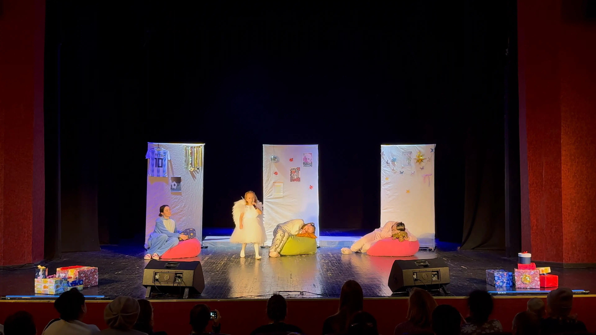
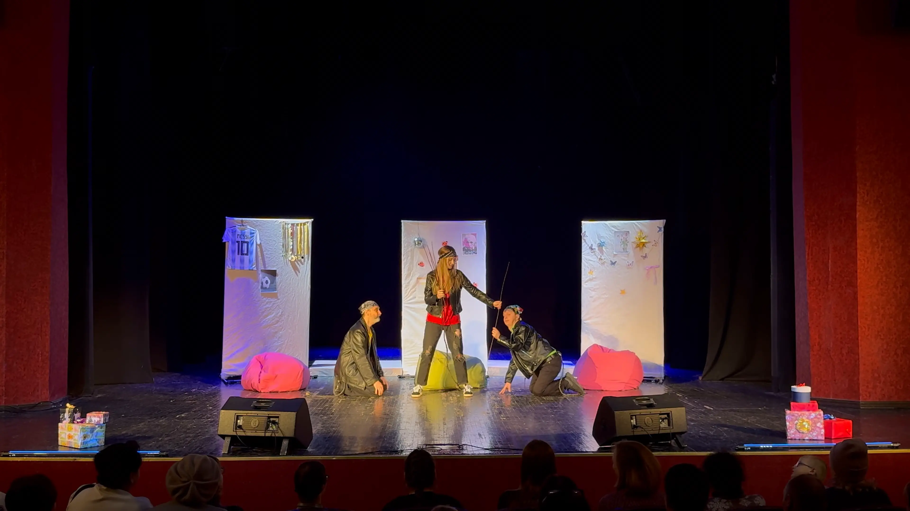

Ludowy Amatorski Teatr – Studio PAROSTKI
Ludowy Amatorski Teatr – Studio PAROSTKI działa od grudnia 2001 r., rozwijając innowacyjne metody rehabilitacji poprzez teatr. Zespół buduje bezpieczną, twórczą przestrzeń dla osób z cechami rozwoju psychofizycznego i intelektualnego, umożliwiając im odkrywanie sprawczości i ekspresji artystycznej.
- Integracyjna komedia-baśń
- 30 minut
- Napisy: PL / EN
Opis spektaklu
W noc Świętego Mikołaja to inkluzywna komedia-baśń dla dzieci, rozwijająca wyobraźnię poprzez ciepło wspólnego działania. Proste sytuacje sceniczne – oczekiwanie, podarunek, spotkanie – tworzą ramę do pracy z uważnością i ekspresją gestu. Spektakl angażuje widza w proces współodczuwania, a bajkowa struktura służy wzmacnianiu poczucia sensu i przynależności.
Metody pracy zespołu opierają się na stopniowym budowaniu scenicznych mikro-zdolności: koncentracji wzroku, koordynacji dłoni, rytmicznej odpowiedzi na partnera. Te elementy składają się na narzędzia rehabilitacyjne – teatr staje się polem doświadczalnym empatii i rozwijania społecznej komunikacji.
„Ten teatr nie jest z litości – jest dla kreatywności.”
Wideo (YouTube)
Galeria



O zespole
Ludowy Amatorski Teatr – Studio PAROSTKI to ukraiński teatr integracyjny z Kijowa. Grupa skupia osoby z różnymi cechami rozwoju psychofizycznego i intelektualnego, tworząc unikalną przestrzeń do ekspresji artystycznej i rehabilitacji poprzez teatr.
Zespołem kieruje Sofia Nesterova, która ściśle współpracuje z dyrektorem artystycznym Vitalijem Ljubotą. Ich praktyki twórcze opierają się na eksperymentowaniu i wspólnym poszukiwaniu języka scenicznego, który wykracza poza formy werbalne.
Spektakl W noc Świętego Mikołaja został stworzony i wyreżyserowany w warunkach wojennych, po wybuchu pełnoskalowej wojny w Ukrainie w 2022 roku. Pomimo trwających wyzwań, zespół kontynuował swoją pracę, demonstrując niezwykłą odporność i zaangażowanie w swoją misję artystyczną.
PAROSTKI brały udział w międzynarodowych festiwalach i zdobyły uznanie za innowacyjne podejście do teatru integracyjnego. Kluczowa jest zasada kreatywności zamiast litości – każdy spektakl powstaje w procesie wspólnej improwizacji i uwzględnienia indywidualnych możliwości.
Zespoły festiwalowe
Rozwiń listę zespołów
Partnerzy festiwalu